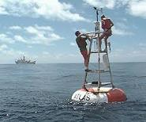
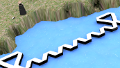
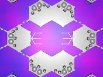

Creating a Floating Island with Plastic Foam
This is an outline design for a floating island. While the design is speculative, the basic materials and components are all available or feasible to build with now, though not using waste materials and not to the specification described here. You can get an overview of this design by following the images, or you can get a fuller view from the associated text and links, especially Rationale, Ideas and Design. Enjoy!
Foam Technology on the Sea
 Buoys & ThingsFoam artifacts include buoys, pontoons, marinas, lifeboats, floating docks and platforms and even remedial bio-islands for improving water quality!
FAR: Floating Artificial Reef
 Artificial ReefArtificial reefs are used to improve marine habitats with shelter and nutrient traps; a floating version would also provide a breakwater similar to salt marshes and mangroves
A Village for the Island
 Village ConstructionA possible design for providing living space on the island, made with standard foam modules and providing the marine equivalent of the village square..
From FARs to Artificial Islands
 Artificial Island
Artificial Island
FARs could be extended to provide residential and recreational space, creating floating islands to counter land loss from erosion and rising sea levels